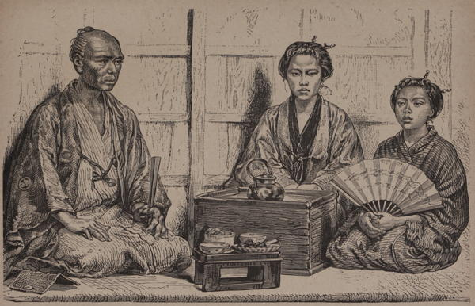

“Types of bourgeois class”
Japan: Historical and Descriptive (1877)
All the trading classes in Japan are considered contemptible by the higher authorities, government employés, and feudal retainers.
Japan, the Amoor, and the Pacific (1861)
The pariahs of Nipon society are all those whose business is with dead animals, in skinning them, &c. This arises from the old doctrine of defilement by blood. Nevertheless, I have met officers and others out shooting, their hands and clothes spotted with the blood of the game they had killed. Fishermen are also said to belong to this body; but if they are pariahs of society they are at least very happy ones.
Japan, the Amoor, and the Pacific (1861)
Beneath the balcony of our saloon [in a tea house in Oji, Edo] flowed the stream, in which a few youthful Japanese of both sexes were floundering about. “Throw some money in the water and let them hunt for it,” said one of the party; and then commenced that edifying mode of killing time, which seems universal, whether in the mud of the Thames, the crystal rivers of other countries, or on the coral ledges of the great ocean. Scores of young and old speedily gathered to the spot; splashing, shrieking, laughing; all was merriment and good humour, till the arrival of some man sent them flying in all directions. But like birds about a field of newly-down grain, they had only gained the next cover, to rush out again to their sport, as soon as the man’s back was turned. Several grave Japanese looked on with most profound disgust at seeing officers so familiar with those beneath them in rank; for in Japan class means caste: none can be trespassed on by the other; the inferior must be servile to his superior; the superior never familiar with those beneath him.
Japan, the Amoor, and the Pacific (1861)
The Tokaida, or great highway of the country, is thronged all day long with people going to or returning from the capital. Every now and then a long train of the servants and armed retainers of one of the Daimios—lords or princes of the empire—may be seen covering the road for miles. It is not unusual for a cortége of this kind to occupy two or three hours in passing by. Men run before and call upon the people to fall down upon their knees to do honour to the great man, nor do they call in vain. All the people on both sides of the way drop down instantly on their knees, and remain in this posture until the norimon or palanquin of the prince has passed by.
Yedo and Peking (1863)
Truth compels me to state that at the present day, as in the days of Kæmpfer, the beggars in Japan are numerous and importunate. As I rode along the road, there were many who “sat by the wayside begging.” These were “the maimed, the halt, the lame, and the blind,” who, as I passed by, prostrated themselves on the ground and asked for alms.
Yedo and Peking (1863)
A remarkable feature in the Japanese character is, that, even to the lowest classes, all have an inherent love for flowers, and find in the cultivation of a few pet plants an endless source of recreation and unalloyed pleasure. If this be one of the tests of a high state of civilization amongst a people, the lower orders amongst the Japanese come out in a most favourable light when contrasted with the same classes amongst ourselves.
Yedo and Peking (1863)
As we turned our steps homeward, and re-entered the long suburb on the road to Kanagawa, the escort pressed upon us the necessity of keeping together, as the drinking-houses of this quarter were always full of the drunken retainers, who are a constant source of terror to the peaceable inhabitants. A somewhat startling illustration of the habits of this class offered itself more suddenly than was agreeable. A party of eight or ten dashed into the street just ahead of us, flourishing their drawn swords and acting like devils. Fortunately they were either too drunk or too much bent on cutting each other to notice us.
Across America and Asia (1870)
Japanese despotism has trained the people very thoroughly in the art of falling instantaneously on their marrow-bones. It is astonishing to see the effect of the magic word “sh’taniro!” “kneel” upon a dense crowd, when a person of high rank is passing; as if by enchantment every gaping, laughing, and chattering native is prostrated, and a deep silence reigns, broken only by the jingling rings on the warden’s iron staff, and the solemnly repeated warning, sh’taniro! sh’taniro!
Across America and Asia (1870)
The Governor [of Ezo] and all the high officers about him were gentlemen whose dignified bearing and refinement and suavity of manner would grace any western society. And I remarked that, as a rule, they showed consideration toward inferiors and servants, never exhibiting the passionate outbursts so common among Chinese officials, a difference, perhaps, partially arising from the consciousness of power with the Japanese. The governors never lose self-possession in presence of the sometimes excited and rude language of some western representatives. On one occasion, in answer to my question whether this self-possession were inborn or the result of education, the Governor replied that it is made one of the most important features of training, from the earliest childhood through life. Indeed, so delicate is the sense of personal honor in the official class, that the wounded feelings of an equal may easily cause him to retaliate by hara-kiru, thereby forcing the offender to perform the same operation. The necessity for self-control thus rests on a basis not less strong than the love of life.
Across America and Asia (1870)
I returned [from Edo] to Yokohama third class, which gave me an opportunity of seeing something of the lower class of Japanese. From the loose-flowing robes of both sexes it is difficult to distinguish the men from the women. The men shave part of their heads, and wear the rest of their hair in a knot. The upper classes wear European dress, though Saburo and the party which he leads retain the national costume. The people smoke very small pipes of tobacco, which constantly require refilling. The use of opium is unknown here.
A Visit to Japan, China, and India (1877)
Nin-so-kus (coolies) are the most numerous, and form the lowest, class in the social life of Japan. These are they who bear the heavy burdens, draw the carts and perform the most menial occupations. Even among them, however, distinctions may be found, as those who work in hides and leather are looked upon by the coolie race itself with great disdain, and are kept separate from all others. We presume this is owing to the fact of their coming in contact with the dead bodies of animals and being thus defiled, according to the strict rules of Buddhism.
The Sunrise Kingdom (1879)
A slight study of the different faces we meet shows a marked distinction between the upper and lower classes. While the features of the latter are generally flattish,—the lips heavy and slightly pouting, the nose short and broad, the eyes, although narrow, mostly horizontal, or occasionally even inclined downwards from the nose,—among the former there prevails a long visage with the bridge of the nose well elevated, and the nose itself often aquiline, the eyes decidedly oblique, and the mouth, although probably somewhat pouting, neither wide nor heavy-lipped. The upper classes are no doubt of purer descent from the conquering race which, landing from the mainland, probably under Jimmu Tennô, became the founders of the Japanese civilization.
The Land of the Morning (1882)
◀ CharacterAinu ▶